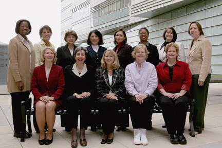

JHU Women's Network Steering Board
Current members, 2006–2007Past Steering Committee Members:
2006–2007
Left to right (sitting): Maria Stockton-Porter, Leerin Shields, Noelia Cantu, Valerie Mazza, Loretta Hoepfner, Denise Guise
Current: 2006-2007 JHU Women's Network Steering Board:
| Valerie A. Mazza | Co-Chair |
| Noelia Cantu | Co-Chair |
| Myrta Byrum | Vice Chair, Community Outreach |
| Maria Joiner | Vice Chair, Membership |
| Nora Koch | Vice Chair, Programs |
| Sharon Kirkham | APL Chapter Chair |
| Denise Guise | Bayview Chapter Chair |
| Open | Homewood Chapter Chair |
| Loretta Hoepfner | JHMI Chapter Chair |
| Carolyn V. Jones | Member At Large |
| April Lawner | Member At Large |
| Shirley Crow | Webmaster |

Left to
right (back row-standing): Maria Stockton-Porter, Jane MacKenzie-White,
Sharon Kirkham, Myrta Byrum, Nora Koch, Wanda Bell-Farrell, L. Robin Newcomb,
Karen Gosnell
Left to right (sitting): Deborah Shackelford, Noelia Cantu, Valerie Mazza,
Loretta Hoepfner, JoEllen Stinchcomb
Current: 2005-2006 JHU Women's Network Steering Board:
| Valerie A. Mazza | Co-Chair |
| Noelia Cantu | Co-Chair |
| Myrta Byrum | Vice Chair, Community Outreach |
| Joanne M. Mullen | Vice Chair, Membership |
| Nora Koch | Vice Chair, Programs |
| Sharon Kirkham | APL Chapter Chair |
| Maria Stockton–Porter | Bayview Chapter Chair |
| Deborah Shackelford | Homewood Chapter Chair |
| Loretta Hoepfner | JHMI Chapter Chair |
| Carolyn V. Jones | Members At Large |
| L. Robin Newcomb | Immediate Past Chair |
| Shirley Crow | Webmaster |
(return to top of page)
1st row: Donna Perry, JoEllen Stinchcomb, Jane McKenzie-White, Noelia Cantu, Valerie Mazza
2nd row: Marie Stockton-Porter, L. Robin Newcomb, Joanne Mullen, Christine Wyant Not pictured: Loretta Hoepfner and Wanda Bell-Farrell
2004-2005 JHU Women's Network Steering Board:
L. Robin Newcomb, Chair
Valerie A. Mazza, Vice Chair, Community Outreach
Joanne M. Mullen, Vice Chair, Membership
Jane McKenzie-White, Vice Chair, Communications (Webpage)
Noelia Cantu, Vice Chair, Programs
Christine A. Wyant, APL Chapter Chair
Maria Stockton-Porter, Bayview Chapter Chair
Donna Perry, Homewood Chapter Chair
Loretta I. Hoepfner, JHMI Chapter Chair
Jo Ellen Stinchcomb, Member-at-Large
Wanda A. Bell-Farrell, Member-at-Large
2003-2004 JHU Women’s Network Steering
Board:
L. Robin Newcomb, Chair
Maria Fiesta, Vice Chair Membership
Valerie Mazza, Vice Chair Community Outreach
Jane McKenzie-White, Vice Chair Communications (Webpage)
Noelia Cantu, Co-Vice Chair Programs
Christine A. Wyant, APL Chapter Chair
Maria Stockton-Porter, Bayview Chapter Chair
Sharon Young, Homewood Chapter Chair
Loretta I. Hoepfner, JHMI Chapter Chair
JoEllen Stinchcomb, Member-at-Large
Wanda A. Bell-Farrell, Member-at-Large
2002-2003 JHU Women’s Network Steering
Board:
L. Robin Newcomb, Chair and JHMI Chapter Chair
Maria Fiesta, Vice Chair Membership
Valerie Mazza, Vice Chair Community Outreach
Jane McKenzie-White, Vice Chair Communications (Webpage)
Christine A. Wyant, APL Chapter Chair
Maria Stockton-Porter, Bayview Chapter Chair
Sharon M. Young, Homewood Chapter Chair
Loretta I. Hoepfner, Member-at-Large
Sharon Honeyblue, Member-at-Large
L. Robin Newcomb, Chair and JHMI Chapter Chair
Pat Guarnino, Membership
Jane McKenzie-White, Communications (Webpage)
Ruth Bassford, Homewood Chapter Chair
Karen Gosnell, APL Chapter Chair
Maria Stockton-Porter, Bayview Representative
Loretta I. Hoepfner, Member-at-Large
Sharon Honeyblue, Member-at-Large
L. Robin Newcomb, Chair and JHMI Chapter Chair
Pat Guarnino, Membership
Christine Spangler, Advocacy
Jane McKenzie White, Communications (Webpage)
Ruth Bassford, Homewood Chapter Chair
Karen Gosnell, APL Chapter Chair
Maria Stockton-Porter, Bayview Representative
Loretta I. Hoepfner, Member-at-Large
Sharon Honeyblue, Member-at-Large
L. Robin Armstrong-Newcomb, Chair and JHMI Chapter Chair
Celeste Smith, Vice Chair for Communications (Webpage)
Cheryl Manning, APL Chapter Chair
Frances Angevine, Bayview Chapter Chair
Ruth E. Bassford, Homewood/Peabody Chapter Chair
Cindy Abel, Immediate Past Chair
(return to top of page)
Gabrielle King, Vice Chair for Communications
Celeste Smith, Vice Chair for Communications (Webpage)
Cheryl Manning, APL Chapter Chair
Frances Angevine, Bayview Chapter Chair
Ruth E. Bassford, Homewood/Peabody Chapter Chair
L. Robin Newcomb, JHMI Chapter Chair
Jude Bellamy, Immediate Past Chair
Debra Pearman, Member–at–Large
Cindy Abel, Senior Vice Chair for Advocacy and Chair Elect
Katina Duklewski, Vice Chair for Membership
Ruth Kling, Vice Chair for Programs
Yolanda Tillett, Vice Chair for Communications
Anna Karuba, Vice Chair for Communications (Webpage)
Martha Seay, Secretary
Rebecca Lowery, Treasurer
Debra Pearman, Immediate Past Chair
Cheryl Manning, APL Caucus Chair
Theresa Balcer, Homewood/Peabody Caucus Chair
Cindy R. Geppi, JHMI Caucus Chair
Ruth Kling, SAIS Caucus Chair
Jude Brown-Bellamy, Senior Vice Chair for Advocacy and Chair Elect
Charlotte Friedman, Vice Chair for Membership
Ruth Kling, Vice Chair for Programs
Yolanda C. Tillett, Vice Chair for Communications
Alison Wampler, Secretary
Cindy Higgins, Treasurer
Gayle Mowbray, Immediate Past Chair
Ann Arnold, APL Caucus Chair
Christine Grieve, Homewood/Peabody Caucus Chair
Jude Brown–Bellamy, JHMI Caucus Chair
Ruth Kling, SAIS Caucus Chair
Debra Pearman, Senior Vice Chair for Advocacy and Chair Elect
Charlotte Friedman, Vice Chair for Membership
Sharon Buie, Vice Chair for Programs
Wendy Harris, Vice Chair for Communications
Alison Wampler, Secretary
Cindy Higgins, Treasurer
Angela Eggleston, Immediate Past Chair
Elizabeth Tolbert, Member-at-Large
Yolanda C. Tillett, Member-at-Large
Ann Arnold, APL Caucus Chair
Christine Grieve, Homewood/Peabody Caucus Chair
Jude Brown–Bellamy, JHMI Caucus Chair
Ruth Kling, SAIS Caucus Chair
| Alexandra Allmick | Louise Andrew | Angela Artis |
| Meg Baldwin | Maia Belosevic | Theresa Bryant |
| Casey Camponoschi | Lisa Conyers | Pam Cranston |
| Angela Eggleston | Suzanne Eikher | Elizabeth Elder |
| Catherine Evans | Elizabeth Fee | Clair Francomano |
| Charlotte Friedman | Gretchen Garman | Charlotte Gerczak |
| Leslie Graf | Bernadette Guthrie | Dawn Hale |
| Carol Harris | Donna Hill | Eileen Holubian |
| Cheruyl Howard | Betsy Hughes | Lois Joellenbeck |
| Lisette Johnson | Sharon Kingsland | Denise Landries |
| Laura Larson | Dale Levitz | Richelle Lewis |
| Lisa Mix | Julie Morgan | Joan Poling |
| Michele Porcaro | Kelley Ray | Kathy Reasinger |
| Mary Ellen Robinson | Janet Seraphine | Doris Jaffe Shiffman |
| Arleen Skaist | Pat Skidmore | Judith Smith |
| Maz Somers | Jan Staples | Emma Stokes |
| Esthel Summerfield | Donna Townsend | Sandra Walden |
| Leslie Waldman | Alison Wampler | Judith Weinstein |
| Marjorie Winslow | Mary Zasac |
(return to top of page)